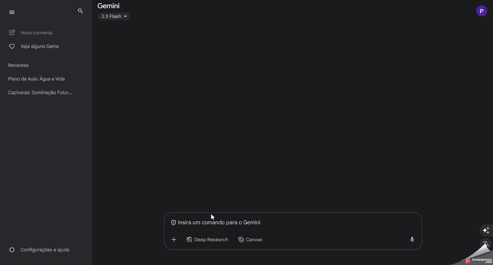

Gemini
Assistente de inteligência artificial do Google para geração de ideias, correção de textos, sugestão de planos de aula, criação de imagens e apoio a diferentes tarefas pedagógicas.
Ficha técnica
Visão geral
O que é o Gemini ?
Gemini é o assistente de inteligência artificial do Google, anteriormente conhecido como Bard. Ele utiliza modelos de linguagem avançados para gerar respostas em linguagem natural, auxiliando em tarefas como redação de textos, planejamento, aprendizado, geração de imagens e muito mais. O Gemini está integrado a diversos serviços do Google, como Gmail, Documentos, Drive e outros, proporcionando uma experiência unificada e eficiente.
Fluxo de uso
Como utilizar o Gemini
Etapa 1
Cadastro
- Acesse o site oficial: https://gemini.google.com/app?hl=pt-BR
- Faça login com sua Conta Google: Utilize sua conta pessoal do Google para acessar o Gemini.
- Aceite os termos de uso: Ao acessar pela primeira vez, será necessário aceitar os termos e condições de uso.
Etapa 2
Iniciando uma Conversa
- Digite sua pergunta ou comando: No campo de texto na parte inferior da página, insira sua solicitação.
- Envie sua mensagem: pressione Enter ou clique no ícone de envio para que o Gemini processe sua solicitação.
- Receba a resposta: O Gemini fornecerá uma resposta baseada na sua entrada.

Etapa 3
Utilizando Recursos Avançados
- Geração de Imagens: Solicite ao Gemini que crie imagens baseadas em descrições textuais.
- Análise de Documentos: Peça ao Gemini para resumir ou analisar documentos presentes no seu Google Drive.
- Planejamento de Tarefas: Utilize o Gemini para criar listas de tarefas, agendas ou itinerários personalizados.
- Integração com Aplicativos: O Gemini pode interagir com outros serviços do Google, como Gmail, Google Maps e YouTube, para fornecer respostas mais contextualizadas.

Etapa 4
Acessando o Gemini em Dispositivos Móveis
- Android: Baixe o aplicativo Gemini na Google Play Store. Após a instalação, você pode configurá-lo como assistente padrão do seu dispositivo.
- iOS: Atualmente, o Gemini está disponível através do aplicativo do Google. Acesse o aplicativo e procure pela aba do Gemini.
Informações complementares
Dicas adicionais
- Modelos Disponíveis: O Gemini oferece diferentes modelos de linguagem, como o 2.0 Flash e o 2.5 Pro, cada um adequado para diferentes tipos de tarefas.
- Personalização: Você pode personalizar as respostas do Gemini ajustando o tom, a extensão e o estilo das respostas.
- Segurança e Privacidade: O Gemini segue as diretrizes de privacidade do Google, garantindo a segurança dos seus dados.